FAQ: How do I install wildintel-tools on Windows using uv?
Follow the steps below to correctly install wildintel-tools on a Windows system using uv.
1. Install Python
- Visit the official Python Python website
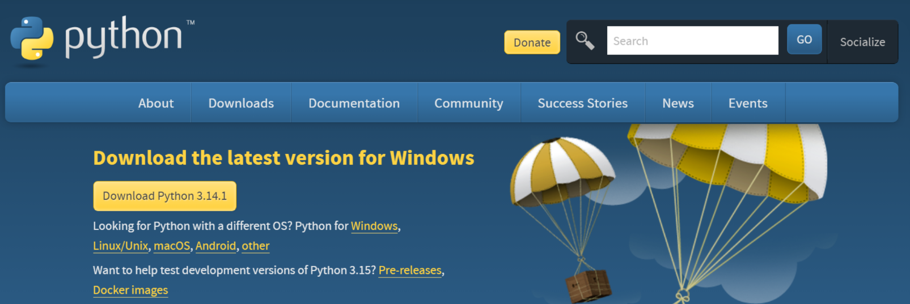
- Download the latest Windows installer. Important: Windows SmartScreen may block the download and show a warning. If this happens, click “Keep” to allow the download to continue.
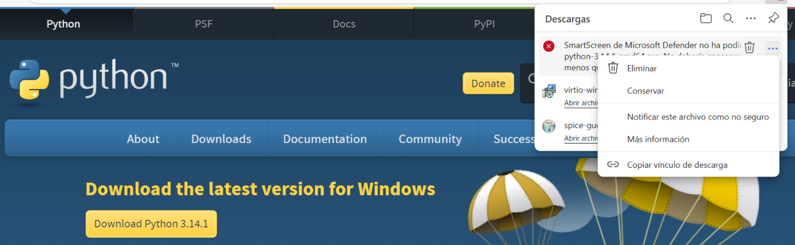
- Run the installer and enable the option “Add Python to PATH” and press Install now.
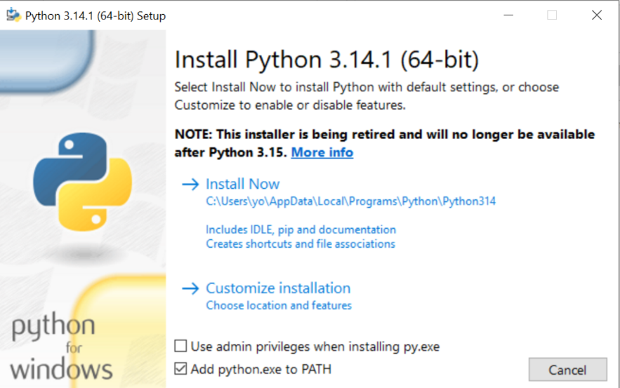
- Complete the installation.
2. Open PowerShell
Open a new PowerShell window (no admin privileges required).
Tip: Navigate to the folder where you want to work (e.g.,
Documents), then hold the Shift key, right-> click, and choose “Open PowerShell window here”. This ensures you start in the correct folder.
3. Install the required tools using winget
Use the following commands to install Git, ExifTool, and uv:
Install Git
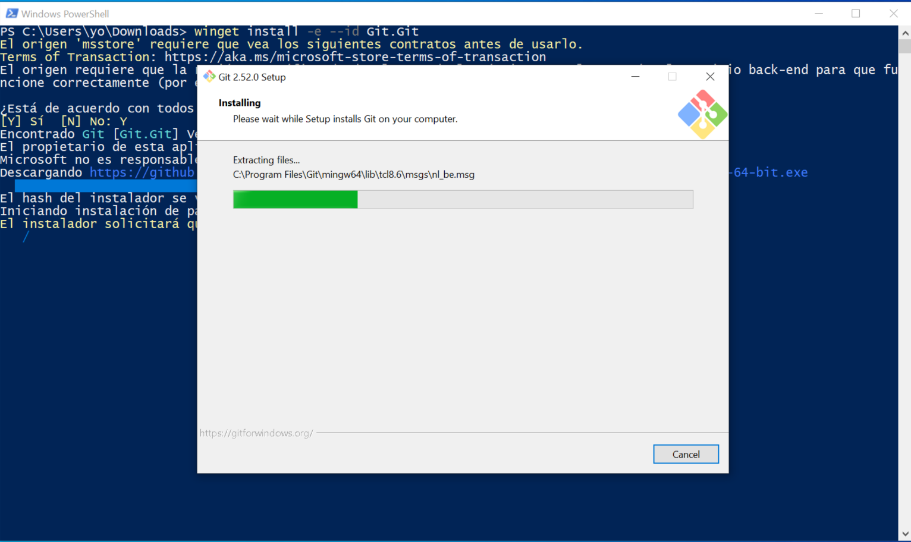
Install ExifTool
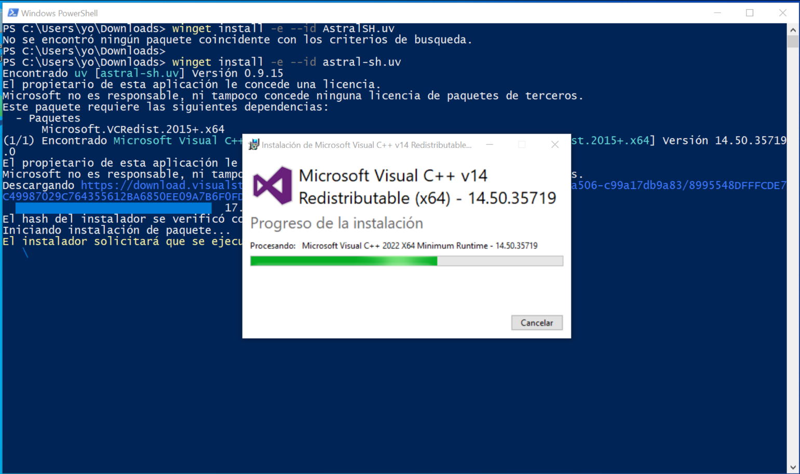
Install uv
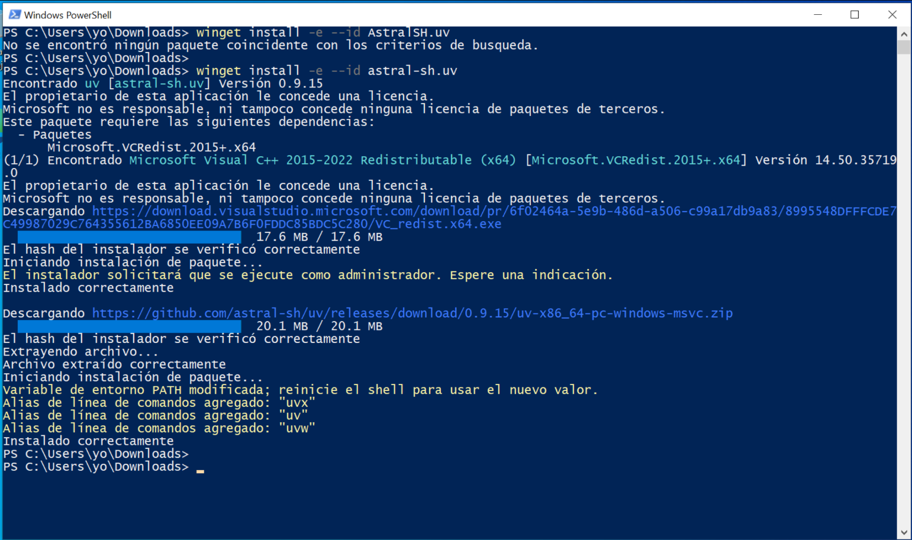
4. Update PATH environment variable and go to your Documents folder
After installing the tools, close PowerShell completely. This ensures that PATH updates take effect. Then, open a new PowerShell session. and go to your Documents folder:
5. Clone the wildintel-tools repository
To install wildintel-tools, you need to clone its repository from GitHub. Use the following command:
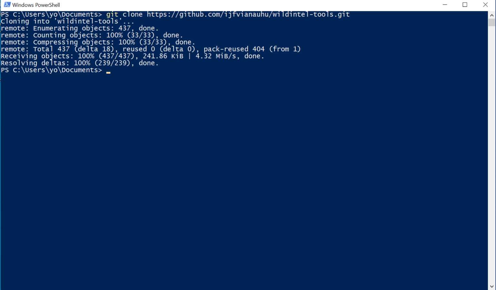
Once the cloning is complete, navigate into the newly created folder:
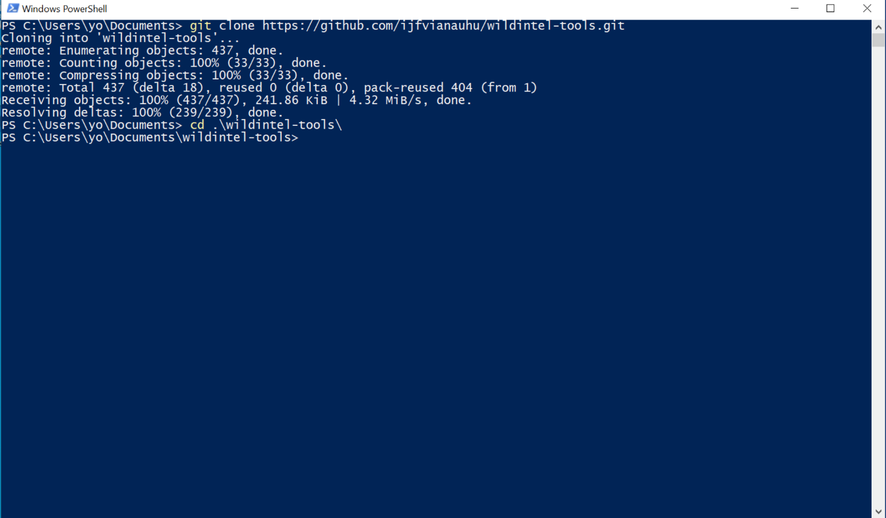
6. Checkout the correct version (v0.1.0)
Wildintel-tools is under active development, and new versions are released frequently. To ensure compatibility
and stability, it is recommended to use version v0.1.0. Use the following command to switch to this version:
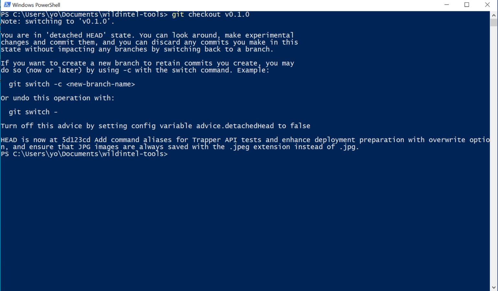
7. Run wildintel-tools using uv
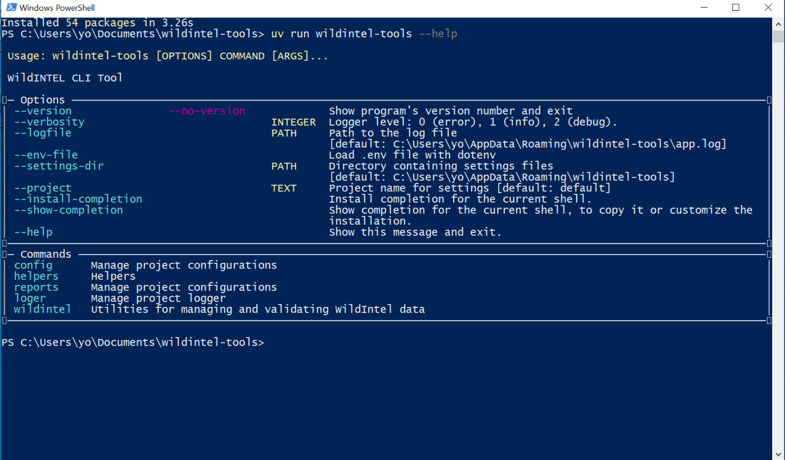
8. Configure connection with Trapper
- View all available configuration options:
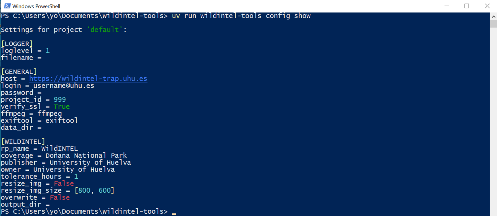
- Set the Trapper login (username):
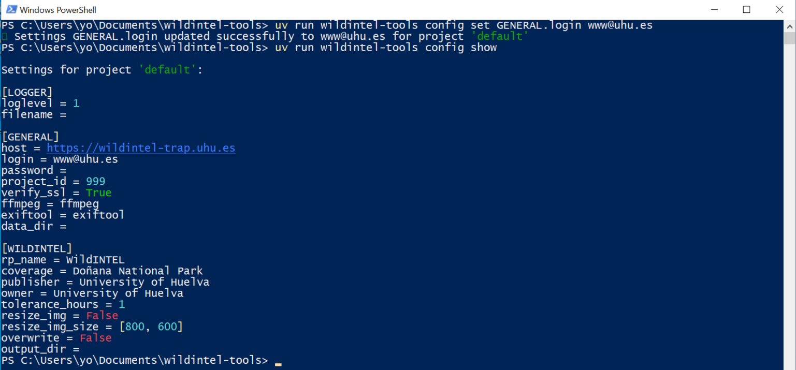
- Set the Trapper password:
- Test the connection to Trapper:
You should see a confirmation if the connection is successful.
9. Configure your working directories
To use wildintel-tools efficiently, you need to create a main directory, for example, in your Documents folder called wildintel-data. Inside this main directory, create the following subdirectories:
collections/– Store all your raw camera trap data here. Organize collections (e.g., recording sessions or revisions) as subfolders.collections-ready-to-trapper/: this folder contains collection restructured into the format expected by trapper-tools. The contents of this directory are automatically generated by the wildintel-tools application after the validation and enrichment process.
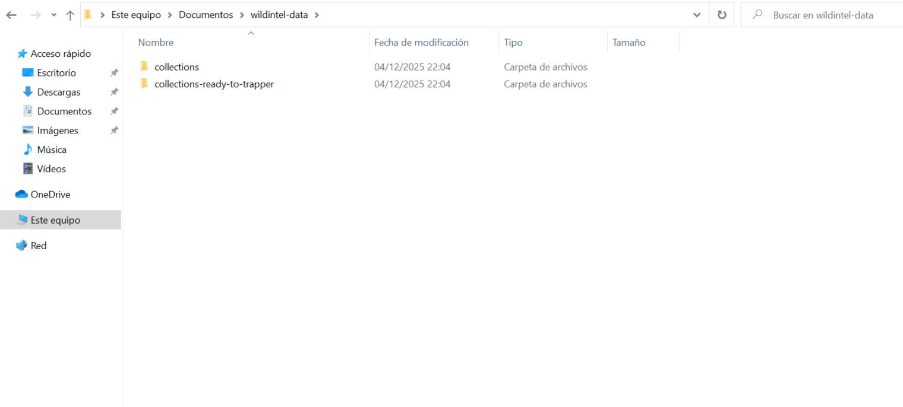
After creating the directories, you need to configure wildintel-tools to point to them. Execute the following command to set the collection directory:
and to set the ready to trapper directory:
uv run wildintel-tools config set WILDINTEL.output_dir $HOME\Documents\wildintel-data\collections-ready-to-trapper\
Finally, check that changes have been applied:
10. Organize collections
To prepare your camera trap data for processing, you need to organize your collections (revisions) in the collections/
directory you created earlier. Each collection should be placed in its own subfolder within the collections/ directory.
For example, if you have two collections named R0033 and R0001, your directory structure should look like this:
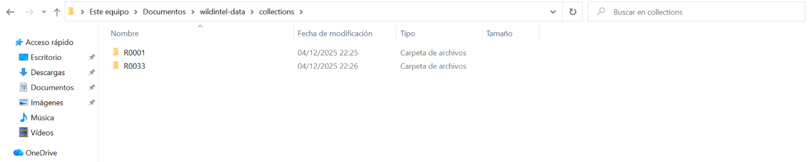
⚠️ Important note Collection names must start with the letter R followed by four digits. Examples:
R0001,R0234,R1025.
Each collection folder should contain one or more subfolders for different camera trap deployments or locations. For example:
if you have a collection named R0033 with two deployments, r0033-wicp_0001 and r0033-wicp_0001, the structure
should be as follows:
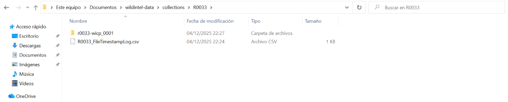
⚠️ Important note Deployment names must be the concatenation of the collection name and the location identifier, separated by a hyphen (-).
The second part of the deployment name (after the hyphen) is the location identifier, you can check the names of the locations create in Trapper executing the command:
Inside each deployment folder, place all the raw images and videos captured by the camera trap during that deployment:
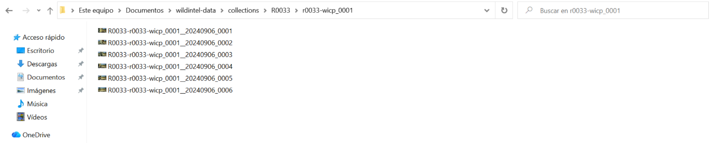
Finally, each collection folder must contain a csv file that includes metadata about the recording deployments. That is,
for each deployment this file incluyes information about when deployment started and ended. The name of this file must be
the collection name followed by _FileTimestampLog.csv.
Following our example, as collection R0033 has two deployments, the metadata file should contain two entries.
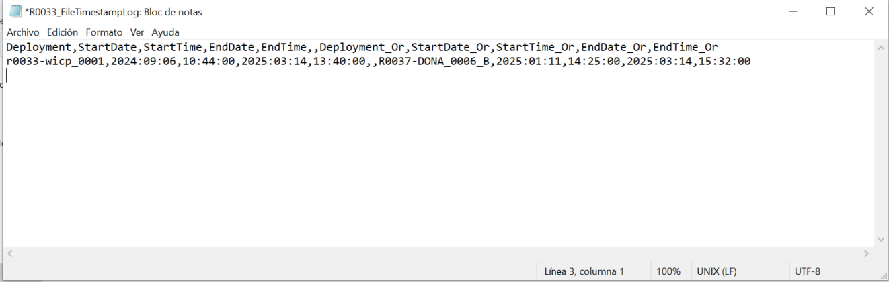
11. Validating collections
Before uploading your collections to Trapper, it is recommended to validate that collections and their deployments have been organized correctly. You can check the structure of your collections:
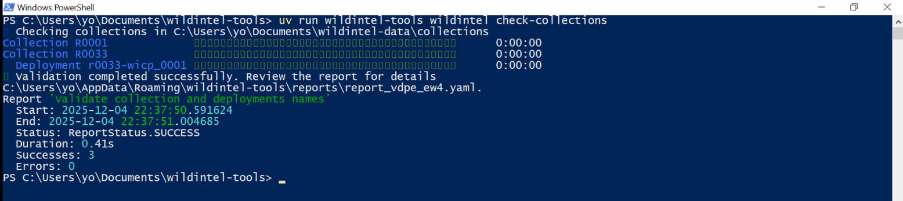
You can check the structure of your deployments:
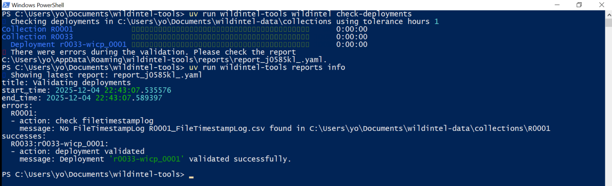
12. Preparing collections
Once your collections have been validated, you can proceed to prepare them for upload to Trapper. This process includes enriching the metadata and restructuring the data into the format expected by Trapper.
⚠️ Important note Enriching the metadata consists in attach XMP information into each image. You can customize this metadata changing the following configuration options: rp_name, coverage, publisher, and owner.
To prepare your collections, run the following command:
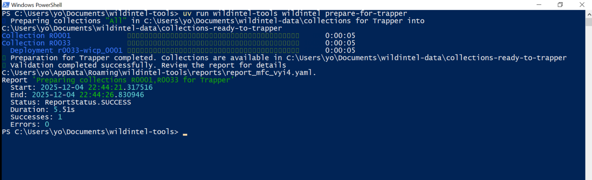
After the process is complete, the prepared collections will be available in the collections-ready-to-trapper/ directory
you configured earlier.
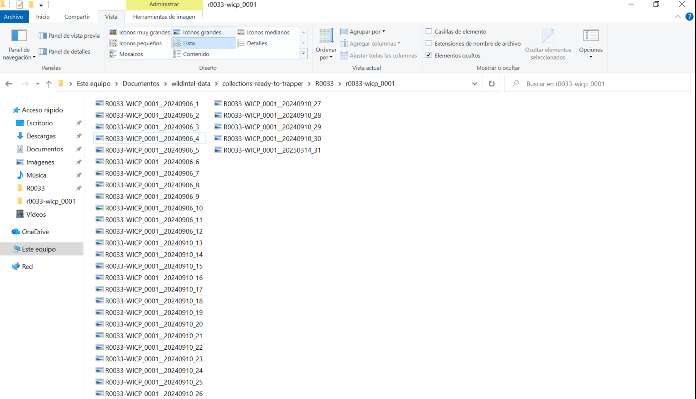
After all these steps, you are now ready to use trapper-tools to upload your prepared collections to Trapper!